library(dartRverse) #version 1.1.2 or higher
library(ggplot2) #for plotting
library(tidyr)
library(patchwork)7 W07 Effective Population Size
W07 Effective Population Size
Effective Population Size


Learning Outcomes
In this session we will learn how to estimate effective population size (Ne) using genomic SNP data. We start with the theoretical background, then move to two practical approaches: (1) the linkage disequilibrium method for contemporary Ne, and (2) the Site Frequency Spectrum (SFS) / coalescent approach for historical Ne. By the end of this tutorial you should be able to:
- Explain the concept of Ne and why it differs from census size (Nc)
- Distinguish between drift, LD-based, and coalescent Ne estimators
- Run a linkage disequilibrium Ne estimate using
gl.LDNein the dartRverse, and understand the role of MAF filtering - Compute a Site Frequency Spectrum (SFS) from SNP data and interpret its shape
- Estimate historical Ne trajectories using EPOS, and understand the role of L and mu
- Appreciate the differences and complementarity of EPOS and Stairways2
Introduction: What is Effective Population Size?
The concept of Ne
Effective population size (Ne) is one of the most fundamental concepts in conservation genetics. It represents the size of an idealised population that would experience genetic drift, accumulate inbreeding, or generate linkage disequilibrium at the same rate as the real population under study.
An idealised population has: equal sex ratio, random mating (panmixia), non-overlapping generations, constant population size over time, and no selection, mutation, or migration.
The actual census size (Nc) — the number of individuals you count in the field — is almost always larger than Ne, often dramatically so. The ratio Ne/Nc is typically 0.1–0.5 for vertebrates but can be far smaller in species with highly skewed reproductive success.
Why is Ne < Nc?
- Unequal sex ratios (e.g. polygynous mating systems where few males do most of the breeding)
- High variance in reproductive success (some individuals contribute many offspring, others none)
- Population size fluctuations over time (the harmonic mean penalises bottlenecks severely)
- Overlapping generations
- Population subdivision and restricted gene flow
Why does Ne matter for conservation?
The rate at which a population loses genetic diversity through drift is governed directly by Ne:
\[H_t = H_0 \left(1 - \frac{1}{2N_e} \right)^t\]
where H₀ is initial heterozygosity and H_t is heterozygosity after t generations. The practical implications are stark:
- A population with Ne = 50 loses ~1% of its heterozygosity per generation
- A population with Ne = 500 loses only ~0.1% per generation
- A population with Ne = 10 loses nearly 5% per generation — catastrophically fast
This is the basis of the 50/500 rule (Franklin 1980, Soule 1986): a minimum Ne of 50 is needed to avoid severe short-term inbreeding depression, and Ne ≥ 500 (more recently revised upward to ~1000) to maintain long-term evolutionary potential. This is a rule of thumb, not a rigid target — it should be applied alongside species-specific biological knowledge.
The many versions of Ne: which one are you estimating?
A critical and often overlooked point is that different methods estimate different things. The term “effective population size” covers several conceptually distinct quantities:
Drift Ne is estimated from the change in allele frequencies between two time points (the temporal method). It reflects the rate of allelic drift between samples. Requires sampling the population at two or more time points.
Inbreeding Ne is estimated from pedigrees or genomic excess homozygosity. It reflects the rate at which individuals become more related to each other over time.
Linkage Disequilibrium Ne (LD Ne) is estimated from the extent of background LD among loci in a single sample. In a finite population, drift creates associations between alleles at unlinked loci — the smaller Ne, the stronger this background LD. This gives a contemporary Ne, reflecting the effective size over the past few generations. This is what NeEstimator / gl.LDNe calculates.
Coalescent Ne is estimated from the genealogical history of alleles using the Site Frequency Spectrum (SFS). Different lineages coalesce at rates that depend on Ne, so the distribution of allele frequencies carries a signal of historical Ne over hundreds to thousands of generations. EPOS and Stairways2 use this approach.
Key message: All Ne estimators compare the observed population to an idealised population, but at different timescales and using different signals. Do not directly compare a contemporary LD Ne to a coalescent Ne without careful consideration — they are measuring related but distinct quantities.
## Setup
Part 1: Contemporary Ne — The Linkage Disequilibrium Method
The LD approach
The LD method estimates Ne from a single sample by measuring background linkage disequilibrium among loci. In an infinitely large population, unlinked loci should be in linkage equilibrium. In a finite population, drift generates LD even among physically unlinked loci. The smaller Ne, the stronger this background LD. The expected squared correlation between alleles at two unlinked loci is approximately (Waples 2006):
\[E[\hat{r}^2] \approx \frac{1}{3 N_e} + \frac{1}{S}\]
where S is the sample size. The 1/S term is sampling noise and is added (subtracted) to isolate the drift-induced LD. This is implemented in the NeEstimator software, accessed via gl.LDNe in the dartRverse.
Key assumptions:
- Loci are in approximate Hardy–Weinberg equilibrium
- No strong selection at the measured loci
- The sample is representative of a single well-mixed population
The critical role of MAF filtering
One of the most important quality choices for LD Ne is the minor allele frequency (MAF) threshold, set with the critical argument. Rare alleles (very low MAF) are problematic because:
- Their frequencies are estimated with high uncertainty, especially in small samples
- They tend to inflate \(\hat{r}^2\) (apparent LD), which biases Ne downward
- They may reflect genotyping errors more than true biological signal
The standard recommendation is MAF ≥ 0.05 (critical = 0.05), removing loci where the minor allele occurs in fewer than 5% of gene copies. This balances accuracy (higher threshold is better) against precision (more loci retained means more precise estimates).
Standard practice: use
critical = c(0, 0.05)to compare the unfiltered and MAF-filtered estimates simultaneously. If the two estimates differ markedly, the unfiltered estimate is likely biased by rare alleles.
Running LD Ne with gl.LDNe
Simulate a population with a known Ne of 50 and estimate it:
# First, download the NeEstimator binary (only necessary once)
dir_ne <- gl.download.binary("neestimator", out.dir = tempdir())Unzipped binary to /var/folders/gp/_vh7q5qs5qdckqqpqfx9y4lm0000gn/T//RtmpuEWLT4/neestimator# Simulate 50 individuals with 3000 loci
sim50 <- gl.sim.Neconst(ninds = 50, nlocs = 3000)
# Run a few generations of random mating to approach HWE
for (i in 1:5) {
sim50 <- gl.sim.offspring(sim50, sim50, noffpermother = 1)
}
# Estimate Ne using LD method
# critical = c(0, 0.05): once without MAF filter, once with MAF >= 5%
ne_result <- gl.LDNe(sim50,
outfile = "sim50LD.txt",
neest.path = dir_ne,
critical = c(0, 0.05),
singleton.rm = TRUE,
mating = "random")Starting gl.LDNe
Processing genlight object with SNP data
Starting gl2genepop
Processing genlight object with SNP data
The genepop file is saved as: /var/folders/gp/_vh7q5qs5qdckqqpqfx9y4lm0000gn/T//RtmpuEWLT4/dummy.gen/
Completed: gl2genepop
Processing genlight object with SNP data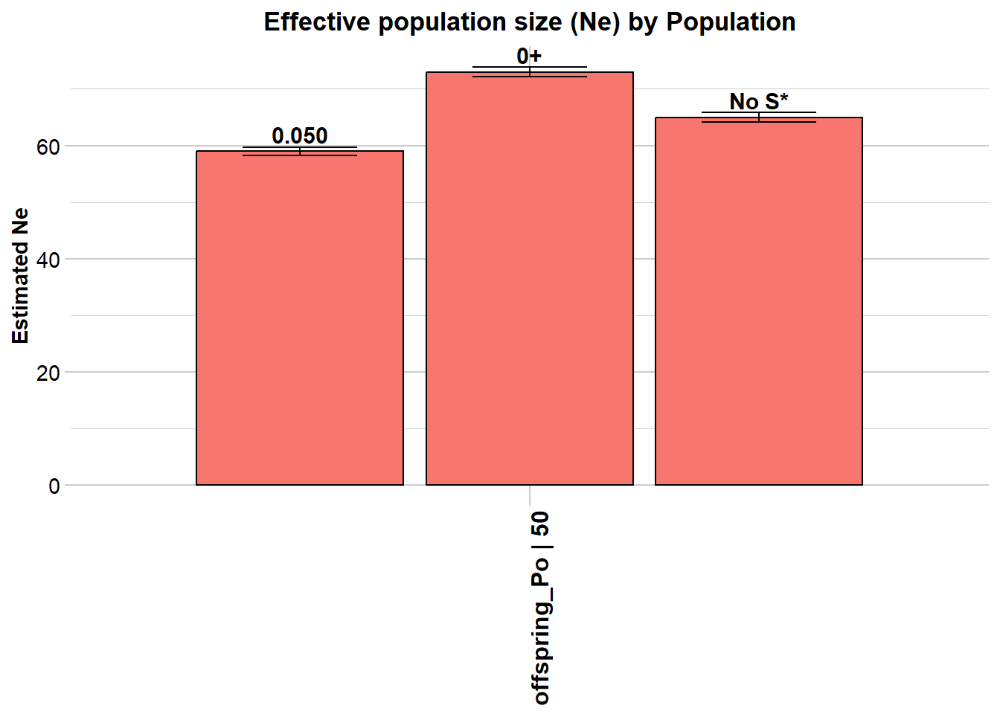
$offspring_Po
Statistic Frequency 1 Frequency 2 Frequency 3
Lowest Allele Frequency Used 0.050 0+ No S*
Harmonic Mean Sample Size 50 50 50
Independent Comparisons 1118260 1848003 1655290
OverAll r^2 0.02789 0.026584 0.027179
Expected r^2 Sample 0.021276 0.021276 0.021276
Estimated Ne^ 48.2 60.7 54.3
CI low Parametric 47.7 60 53.8
CI high Parametric 48.8 61.3 54.9
CI low JackKnife 40.3 51 46.2
CI high JackKnife 59 73.7 65.1
The results are saved in: /var/folders/gp/_vh7q5qs5qdckqqpqfx9y4lm0000gn/T//RtmpuEWLT4/sim50LD.txt
Completed: gl.LDNe The output shows two rows — one for each critical value. The estimate with critical = 0.05 should be closer to the true Ne of 50.
### Exercise 1: Effect of MAF threshold on Ne estimates
dir_ne <- gl.download.binary("neestimator", out.dir = tempdir())
# Simulate 50 individuals with 3000 loci
sim50 <- gl.sim.Neconst(ninds = 50, nlocs = 3000)
# Run a few generations of random mating to approach HWE
for (i in 1:5) {
sim50 <- gl.sim.offspring(sim50, sim50, noffpermother = 1)
}
# Estimate Ne using LD method
# critical = c(0, 0.05): once without MAF filter, once with MAF >= 5%
ne_result <- gl.LDNe(sim50,
outfile = "sim50LD.txt",
neest.path = dir_ne,
critical = c(0, 0.05),
singleton.rm = TRUE,
mating = "random")The Waples correction for genomic data
When thousands of SNPs are available and a genome map exists, physically linked loci on the same chromosome show LD due to recombination — not just drift. This inflates apparent LD and biases Ne downward. Waples et al. (2016) showed that restricting analysis to inter-chromosomal locus pairs (pairing = "separate") corrects for physical linkage and produces improved estimates.
pops <- possums.gl[1:60, 1:100]
# Assign chromosome information (illustrative — use real data in practice)
pops@chromosome <- as.factor(sample(1:10, size = nLoc(pops), replace = TRUE))
ne_separate <- gl.LDNe(pops,
outfile = "popsLD_sep.txt",
pairing = "separate",
neest.path = dir_ne,
critical = c(0, 0.05),
singleton.rm = TRUE,
mating = "random")Starting gl.LDNe
Processing genlight object with SNP data
Starting gl2genepop
Processing genlight object with SNP data
The genepop file is saved as: /var/folders/gp/_vh7q5qs5qdckqqpqfx9y4lm0000gn/T//RtmpuEWLT4/dummy.gen/
Completed: gl2genepop
Processing genlight object with SNP data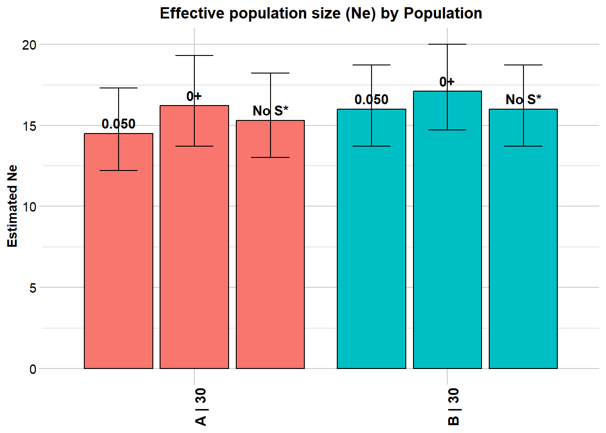
$A
Statistic Frequency 1 Frequency 2 Frequency 3
Lowest Allele Frequency Used 0.050 0+ No S*
Harmonic Mean Sample Size 30 30 30
Independent Comparisons 2961 3488 3334
OverAll r^2 0.056861 0.054967 0.055845
Expected r^2 Sample 0.036878 0.036878 0.036878
Estimated Ne^ 13.5 15.1 14.3
CI low Parametric 11.4 12.9 12.2
CI high Parametric 16 17.9 16.9
CI low JackKnife 8.3 9.9 9.4
CI high JackKnife 23 24.3 22.8
$B
Statistic Frequency 1 Frequency 2 Frequency 3
Lowest Allele Frequency Used 0.050 0+ No S*
Harmonic Mean Sample Size 30 30 30
Independent Comparisons 4074 4421 4074
OverAll r^2 0.05409 0.052909 0.05409
Expected r^2 Sample 0.036878 0.036878 0.036878
Estimated Ne^ 16 17.3 16
CI low Parametric 13.8 14.9 13.8
CI high Parametric 18.8 20.3 18.8
CI low JackKnife 10.9 11.6 10.9
CI high JackKnife 24.8 27.8 24.8
The results are saved in: /var/folders/gp/_vh7q5qs5qdckqqpqfx9y4lm0000gn/T//RtmpuEWLT4/popsLD_sep.txt
Completed: gl.LDNe If chromosome data is unavailable but the number of chromosomes (or genome length) is known, apply a numerical correction from Waples et al. (2016):
ne_corrected <- gl.LDNe(pops,
outfile = "popsLD_corr.txt",
neest.path = dir_ne,
critical = c(0, 0.05),
singleton.rm = TRUE,
mating = "random",
Waples.correction = 'nChromosomes',
Waples.correction.value = 22)Starting gl.LDNe
Processing genlight object with SNP data
Starting gl2genepop
Processing genlight object with SNP data
The genepop file is saved as: /var/folders/gp/_vh7q5qs5qdckqqpqfx9y4lm0000gn/T//RtmpuEWLT4/dummy.gen/
Completed: gl2genepop
Processing genlight object with SNP data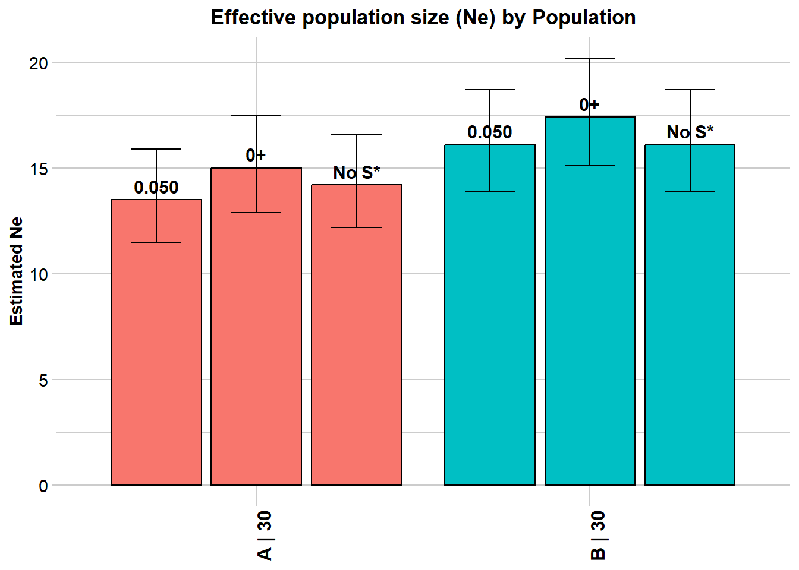
$A
Statistic Frequency 1 Frequency 2 Frequency 3
Lowest Allele Frequency Used 0.050 0+ No S*
Harmonic Mean Sample Size 30 30 30
Independent Comparisons 3321 3916 3741
OverAll r^2 0.056847 0.055101 0.055956
Expected r^2 Sample 0.036878 0.036878 0.036878
Estimated Ne^ 13.5 15 14.2
CI low Parametric 11.5 12.9 12.2
CI high Parametric 15.9 17.5 16.6
CI low JackKnife 8.3 9.9 9.4
CI high JackKnife 23 23.9 22.6
Waples' corrected Ne 17.4 19.4 18.3
Waples' corrected CI low Parametric 14.8 16.6 15.7
Waples' corrected CI high Parametric 20.5 22.6 21.4
Waples' corrected CI low JackKnife 10.7 12.8 12.1
Waples' corrected CI high JackKnife 29.7 30.8 29.2
$B
Statistic Frequency 1 Frequency 2 Frequency 3
Lowest Allele Frequency Used 0.050 0+ No S*
Harmonic Mean Sample Size 30 30 30
Independent Comparisons 4560 4950 4560
OverAll r^2 0.054024 0.052873 0.054024
Expected r^2 Sample 0.036878 0.036878 0.036878
Estimated Ne^ 16.1 17.4 16.1
CI low Parametric 13.9 15.1 13.9
CI high Parametric 18.7 20.2 18.7
CI low JackKnife 11 11.7 11
CI high JackKnife 24.7 27.6 24.8
Waples' corrected Ne 20.8 22.5 20.8
Waples' corrected CI low Parametric 17.9 19.5 17.9
Waples' corrected CI high Parametric 24.1 26.1 24.1
Waples' corrected CI low JackKnife 14.2 15.1 14.2
Waples' corrected CI high JackKnife 31.9 35.6 32
The results are saved in: /var/folders/gp/_vh7q5qs5qdckqqpqfx9y4lm0000gn/T//RtmpuEWLT4/popsLD_corr.txt
Completed: gl.LDNe Understanding Inf estimates
Sometimes gl.LDNe returns Ne = Inf. This typically means the population is very large (negligible drift-induced LD), but it can also arise as a technical artefact. For random mating with S >= 30 individuals, the bias-corrected formula is:
\[N_e = \frac{1/3 + \sqrt{1/9 - 2.76\hat{r}^{2\prime}}}{2\hat{r}^{2\prime}}\]
When the corrected \(\hat{r}^{2\prime}\) is very small or negative (which can happen with small samples and rare alleles), the square root becomes undefined and Ne is reported as Inf. The naive = TRUE option skips the bias correction and helps diagnose the source:
ne_naive <- gl.LDNe(pops,
outfile = "popsLD_naive.txt",
neest.path = dir_ne,
critical = c(0, 0.05),
singleton.rm = TRUE,
mating = "random",
naive = TRUE)Practical remedies for Inf estimates:
- Increase the MAF threshold to remove rare, noisy alleles
- Check whether sample size is very small (S < 20 is problematic)
- If Inf persists across thresholds and with
naive = TRUE, it likely reflects a genuinely large population, but be cautious about over-interpreting Inf as “very large” — it may simply mean “too large to estimate with this method and data quality”.
# EXERCISE:
# Simulate two populations:
# (a) ninds = 200, nlocs = 1000 — a large population
# (b) ninds = 20, nlocs = 1000 — a small population
#
# For each, run 3 generations of random mating, then estimate Ne with gl.LDNe.
# Use critical = c(0, 0.05).
#
# QUESTIONS:
# - Do you get Inf estimates for the larger population?
# - Does the MAF filter help?
# - How close are the estimates to the true Ne?
dir_ne <- gl.download.binary("neestimator", out.dir = tempdir())
# Large population (true Ne ~ 200)
sim200 <- gl.sim.Neconst(ninds = 200, nlocs = 1000)
for (i in 1:3) sim200 <- gl.sim.offspring(sim200, sim200, noffpermother = 1)
# Small population (true Ne ~ 20)
sim20 <- gl.sim.Neconst(ninds = 20, nlocs = 1000)
for (i in 1:3) sim20 <- gl.sim.offspring(sim20, sim20, noffpermother = 1)
# Run gl.LDNe for both and compare:Part 2: Historical Ne — The Site Frequency Spectrum Approach
What is the Site Frequency Spectrum?
The Site Frequency Spectrum (SFS) — also called the allele frequency spectrum — counts how many SNPs in your dataset carry their minor allele at each possible frequency. For a sample of n diploid individuals (2n gene copies), the folded SFS tabulates SNPs from minor allele frequency (MAF) = 1/(2n) up to 0.5.
The shape of the SFS carries a demographic signal:
| Demographic event | Effect on SFS |
|---|---|
| Constant population | Exponential decay (many rare, few common alleles) |
| Recent population decline | Excess of intermediate-frequency alleles |
| Recent population expansion | Excess of rare alleles (singletons) relative to intermediate frequencies |
| Severe bottleneck | Strong excess of singletons |
Coalescent theory provides the mathematical link between the SFS and historical Ne: the rate at which lineages coalesce in the past depends on Ne at that time. By fitting a model to the observed SFS, we can infer how Ne has changed over time. This is what EPOS and Stairways2 do.
2.1 Computing the SFS in the dartRverse
The gl.sfs function computes the SFS from a genlight/dartR object. Before computing the SFS, filter your data carefully:
- Minimal missing data (the SFS is sensitive to missingness, which distorts allele frequencies)
- Monomorphic loci removed
- Good call rates per locus and per individual
# Example filtering workflow for real data
north <- readRDS(file.path(path.data, "TympoNorth.rds"))
north2 <- gl.filter.callrate(north, method = "loc", threshold = 0.95)Starting gl.filter.callrate
Processing genlight object with SNP data
Warning: data include loci that are scored NA across all individuals.
Consider filtering using gl <- gl.filter.allna(gl)
Warning: Data may include monomorphic loci in call rate
calculations for filtering
Recalculating Call Rate
Removing loci based on Call Rate, threshold = 0.95 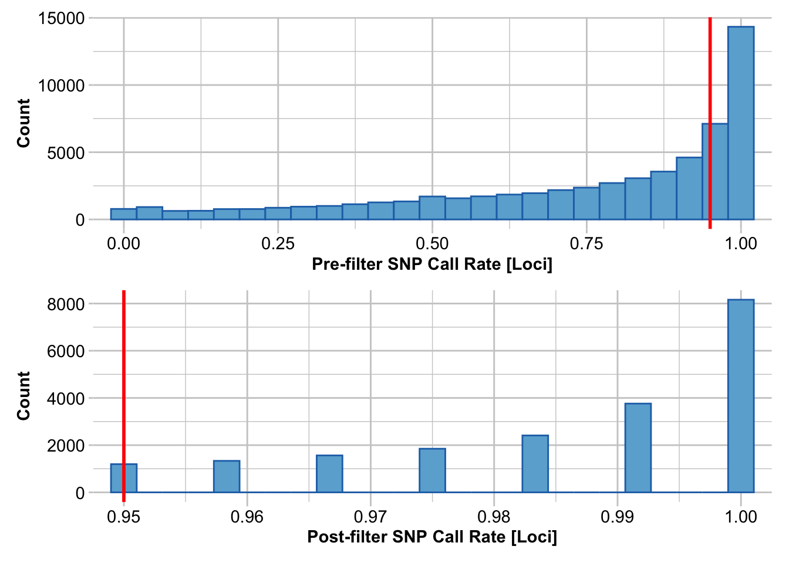
Completed: gl.filter.callrate north3 <- gl.filter.rdepth(north2, lower = 10, upper = 40)Starting gl.filter.rdepth
Processing genlight object with SNP data
Removing loci with rdepth <= 10 and >= 40 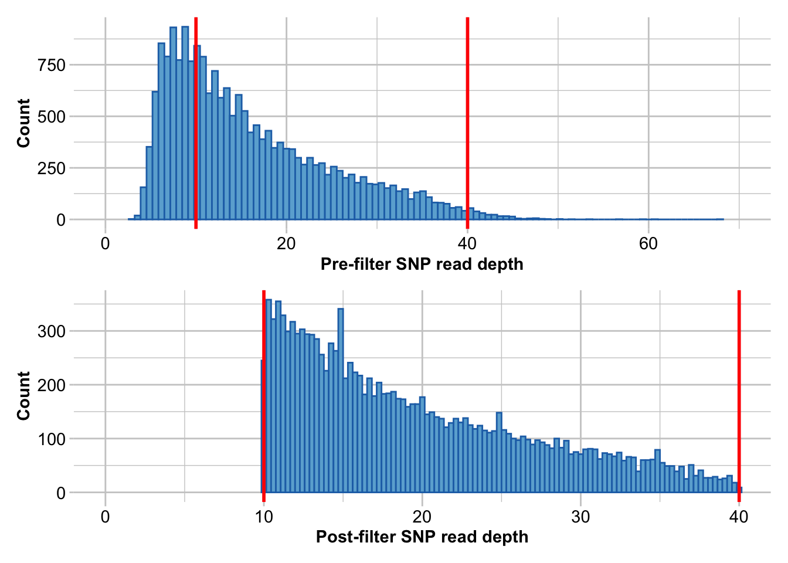
Completed: gl.filter.rdepth north4 <- gl.filter.monomorphs(north3)Starting gl.filter.monomorphs
Processing genlight object with SNP data
Identifying monomorphic loci
Removing monomorphic loci and loci with all missing
data
Completed: gl.filter.monomorphs north5 <- gl.filter.callrate(north4, threshold = 0.9, method = "ind")Starting gl.filter.callrate
Processing genlight object with SNP data
Recalculating Call Rate
Removing individuals based on Call Rate, threshold = 0.9 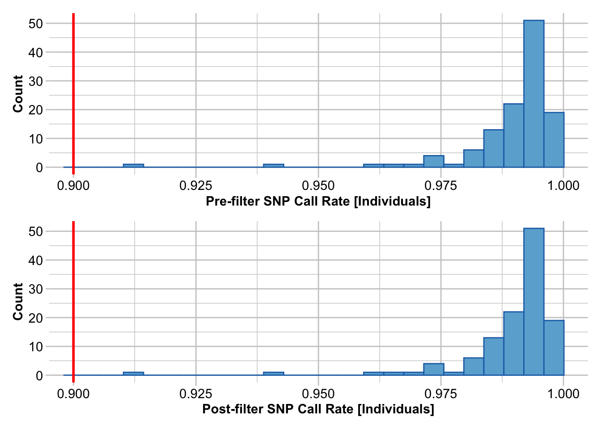
Note: Locus metrics not recalculated
Note: Resultant monomorphic loci not deleted
Completed: gl.filter.callrate nInd(north5)[1] 121nLoc(north5)[1] 10832Now compute the SFS from a simulated dataset:
# Load a simulated dataset with constant Ne = 100
gl100 <- readRDS(file.path(path.data, "slim_100.rds"))
nInd(gl100)
nLoc(gl100)
# Folded SFS (default — use when ancestral allele state is unknown)
sfs_const <- gl.sfs(gl100, folded = TRUE)
sfs_const
# Unfolded SFS (requires knowledge of the ancestral allele)
sfs_unfolded <- gl.sfs(gl100, folded = FALSE)
sfs_unfoldedThe minbinsize argument controls whether the lowest-frequency bins are included. minbinsize = 1 retains singletons. In real data, singletons can be inflated by sequencing errors, so minbinsize = 2 or higher is common for empirical datasets. However, removing too many bins loses demographic information — the lowest bins carry the strongest signal about recent events.
### Exercise 3: Exploring the SFS
# EXERCISE:
# Using an example data set
# Steps:
# 1. gl.filter.callrate(method = "loc", threshold = 0.95) to filter missing data
# 2. gl.filter.monomorphs() to remove invariant loci
# 3. gl.sfs(folded = TRUE) with minbinsize = 1 and then minbinsize = 5
#
# QUESTIONS:
# - What does the SFS look like? Does it suggest recent expansion or contraction?
# - How does changing minbinsize affect the number of SNPs in the spectrum?
# - When would you use a higher minbinsize in real data?
glex <- readRDS(file.path(path.data, "slim_ex.rds"))2.2 Comparing SFS shapes across demographic scenarios
Let us compare four simulated datasets to build intuition about SFS shapes under different demographic histories.
# Load four simulated datasets with known demographic histories
gl100 <- readRDS(file.path(path.data, "slim_100.rds"))
gldec <- readRDS(file.path(path.data, "slim_100_50_50yago.rds"))
glinc <- readRDS(file.path(path.data, "slim_100_200_50yago.rds"))
glbottle <- readRDS(file.path(path.data, "slim_100_10_50_50yago_10year.rds"))
# Compute SFS for each scenario
sfs_const <- gl.sfs(gl100, folded = TRUE)
sfs_dec <- gl.sfs(gldec, folded = TRUE)
sfs_inc <- gl.sfs(glinc, folded = TRUE)
sfs_bottle <- gl.sfs(glbottle, folded = TRUE)
# Combine into a single data frame and plot
df <- data.frame(
x = 0:50,
Constant = as.numeric(sfs_const),
Decline = as.numeric(sfs_dec),
Increase = as.numeric(sfs_inc),
Bottleneck = as.numeric(sfs_bottle)
)
df_long <- tidyr::pivot_longer(df, -x, names_to = "Scenario", values_to = "Count")
ggplot(df_long, aes(x = x, y = Count)) +
geom_bar(stat = "identity", fill = "steelblue") +
facet_wrap(~Scenario, scales = "free_y") +
labs(x = "Minor allele frequency class",
y = "Number of SNPs",
title = "SFS shapes under different demographic histories") + ylim(c(0,4000))
theme_bw()Once you can see four different sfs within a panel you can clearly see the effect of historic population sizes. Mind you those data sets
Differences between SFS shapes can be subtle visually. This is why formal inference methods are needed — human visual comparison of SFS plots is unreliable, especially for mild or recent demographic events. If you have a real dataset it might be a good idea to simulate data for a certain trajectory using your sample sizes and number of SNPs and then compare this to your sfs.
2.3 Estimating historical Ne with EPOS
EPOS (Lynch et al. 2019) estimates the historical Ne trajectory using a fast semi-analytical optimisation applied to the SFS. We use EPOS in this tutorial because it runs in seconds to minutes rather than the hours required by Stairways2, while producing broadly comparable results.
The key parameters: L and mu
EPOS requires two parameters to place the inferred trajectory on an absolute scale:
- L — the total length of the genome region that was sequenced (base pairs). This is not the number of SNPs, but the total sequence length surveyed — the “opportunity” for mutations to occur.
- mu — the per-site per-generation mutation rate.
These together determine the expected number of mutations per generation:
\[x = \mu \times L \times 2 \times N_e\]
If L or mu is wrong, the shape of the trajectory is usually preserved but the absolute axis values (Ne and generations) will be off. For within-dataset comparisons, the trajectory shape is more robust. For comparing absolute Ne across datasets or species, getting L and mu right is essential.
For simulated data: L and mu are known exactly.
For DArTseq data: A common approximation is L = nLoc * 75 * 200 (loci × tag length ~75 bp × ~200 to account for sampling fraction). Alternatively, L can be estimated using Watterson’s formula (see Exercise B). Species-specific mutation rates should be used where available; a vertebrate default is often mu = 1e-8.
First, download EPOS:
dir_epos <- gl.download.binary("epos", out.dir = tempdir())Run EPOS on the constant Ne = 100 simulation:
L <- 5e8 # total genome length from simulation (known)
mu <- 1e-8 # mutation rate from simulation (known)
Ne_epos <- gl.run.epos(gl100,
epos.path = dir_epos,
L = L,
u = mu,
boot = 10,
minbinsize = 1)The median should hover around Ne = 100 throughout. Confidence intervals widen in the most recent time periods (too few mutations have accumulated for precise estimation) and in the deepest past (the coalescent is poorly resolved by a finite sample).
What happens with a wrong L?
# Common but incorrect approximation: nLoc * 69 bp
L_wrong <- 69 * nLoc(gl100)
Ne_epos_wrong <- gl.run.epos(gl100,
epos.path = dir_epos,
L = L_wrong,
u = mu,
boot = 10,
minbinsize = 1)The trajectory shape is preserved, but absolute axis values are badly wrong. Setting L too low inflates the inferred Ne — the same number of observed mutations must be explained by a smaller genome, implying a larger population. Importantly, the relative pattern of increases and decreases remains informative even when L is misspecified.
Exercise 4: Run EPOS on all demographic scenarios
# EXERCISE:
# Run EPOS on all four simulated datasets (gl100, glinc, gldec, glbottle).
# Use L = 5e8 and mu = 1e-8 for all four.
# Plot the four Ne trajectories side by side.
#
# QUESTIONS:
# - Can EPOS correctly identify the direction of demographic change?
# - How well does it recover the timing of the change?
# - Which scenario is hardest to recover? Why?
L <- 5e8
mu <- 1e-8
gl100 <- readRDS(file.path(path.data, "slim_100.rds"))
gldec <- readRDS(file.path(path.data, "slim_100_50_50yago.rds"))
glinc <- readRDS(file.path(path.data, "slim_100_200_50yago.rds"))
glbottle <- readRDS(file.path(path.data, "slim_100_10_50_50yago_10year.rds"))
# Tip: run gl.epos() on each, then use patchwork to plot them together:
# p1 + p2 + p3 + p42.4 A real-data example
Here we apply the full workflow to a real SNP dataset from northern brush-tailed possums (Trichosurus vulpecula, Tympo North population). The main difference from simulated data is that L must be approximated.
# Load and filter real data
north <- readRDS(file.path(path.data, "TympoNorth.rds"))
north2 <- gl.filter.callrate(north, method = "loc", threshold = 0.95)
north3 <- gl.filter.rdepth(north2, lower = 10, upper = 40)
north4 <- gl.filter.monomorphs(north3)
north5 <- gl.filter.callrate(north4, threshold = 0.9, method = "ind")
nInd(north5)
nLoc(north5)
# For DArT data: L ~ nLoc * 75 bp * 200
L_real <- nLoc(north5) * 75 * 200
mu_real <- 16.17e-9 # pogona-specific estimate
# Run EPOS
Ne_north <- gl.run.epos(north5,
epos.path = dir_epos,
L = L_real,
u = mu_real,
method = "greedy",
depth = 2,
boot = 5)2.5 Stairways2 — an alternative coalescent method
Stairways2 (Liu & Fu 2020) is the most widely used method for historical Ne inference from the SFS. It uses a machine learning approach to explore the demographic parameter space more thoroughly than EPOS’s semi-analytical optimisation, which may give an advantage for complex multi-epoch histories.
The key trade-off is computational time: a Stairways2 run that takes 5–60 minutes can be accomplished in seconds with EPOS, and results are often broadly similar. Our recommended workflow is:
- Use EPOS for rapid exploration and quality checking
- Use Stairways2 for final publishable results when time allows
Both methods use the same inputs (L, mu, minbinsize), so the discussion above applies equally to both, and results are directly comparable.
# Stairways2 is slow (5+ minutes) — run and save, then load results
# Un-comment to actually run:
# Ne_sw <- gl.run.stairway2(gl100,
# stairway.path = path.binaries,
# mu = 1e-8,
# gentime = 1,
# run = TRUE,
# nreps = 30,
# parallel = 4,
# L = 5e8,
# minbinsize = 1)
# saveRDS(Ne_sw, file.path(path.data, "Ne_sw_gl100.rds"))
# Load pre-computed result
Ne_sw <- readRDS(file.path(path.data, "Ne_sw_gl100.rds"))
ggplot(Ne_sw, aes(x = year, y = Ne_median)) +
geom_line(colour = "steelblue", linewidth = 1) +
geom_ribbon(aes(ymin = Ne_2.5., ymax = Ne_97.5.),
alpha = 0.2, fill = "steelblue") +
labs(x = "Years ago",
y = "Effective population size (Ne)",
title = "Stairways2: constant Ne = 100") +
theme_bw()Exercise 5: Compare EPOS and Stairways2
# EXERCISE:
# Load the pre-computed Stairways2 result:
# Ne_sw <- readRDS(file.path(path.data, "Ne_sw_gl100.rds"))
#
# Run EPOS on the same dataset (gl100, L = 5e8, mu = 1e-8).
# Plot both trajectories on the same graph for direct comparison.
#
# HINT: Stairways2 returns "year" on the x-axis; EPOS returns "generation".
# If generation time = 1 year they are equivalent.
#
# QUESTIONS:
# - Do EPOS and Stairways2 agree on the general trajectory?
# - Do the confidence intervals differ in width?
# - In what circumstances would you prefer Stairways2 over EPOS?
gl100 <- readRDS(file.path(path.data, "slim_100.rds"))
Ne_sw <- readRDS(file.path(path.data, "Ne_sw_gl100.rds"))
L <- 5e8
mu <- 1e-8
# Your code here:Additional Exercises
Exercise A: Apply the full LD Ne workflow to a real dataset
# EXERCISE:
# Using possums.gl, choose two populations of contrasting size or history.
# Run the full LD Ne workflow:
# 1. gl.keep.pop() to keep each population separately
# 2. gl.LDNe() with critical = c(0, 0.05)
# Compare the Ne estimates for the two populations.
#
# QUESTIONS:
# - Which population has the lower Ne?
# - What does a low Ne imply for conservation management of that population?
# - Do the Ne estimates change notably between critical = 0 and critical = 0.05?
dir_ne <- gl.download.binary("neestimator", out.dir = tempdir())
# Your code here:Exercise B: Estimating L from Watterson’s estimator
# EXERCISE:
# When L is unknown, it can be estimated from Watterson's theta.
# The formula is:
# L = sum(sfs[-1]) / (4 * n * mu * a_n)
# where a_n = sum(1/i for i = 1 to 2n-1) is the Watterson normalisation constant,
# n is the number of individuals, and mu is the mutation rate.
#
# Use this formula to estimate L for the sim50 dataset (true L = 5e8),
# then run EPOS with L_est and compare to the result with the true L.
sim50 <- gl.sim.Neconst(ninds = 50, nlocs = 3000)
for (i in 1:5) sim50 <- gl.sim.offspring(sim50, sim50, noffpermother = 1)
mu <- 1e-8
n <- nInd(sim50)
sfs <- gl.sfs(sim50)
# Watterson normalisation constant
a_n <- sum(1 / (1:(2*n - 1)))
a_n
# Estimate L using Watterson's formula
L_est <- sum(sfs[-1]) / (4 * n * mu * a_n)
L_est # how close is this to the true L = 5e8?
# Now run EPOS with L_est and compare to the true-L run
# dir_epos <- gl.download.binary("epos", out.dir = tempdir())
# Ne_est <- gl.run.epos(sim50, epos.path = dir_epos, L = L_est, u = mu, boot = 10)
# Ne_true <- gl.run.epos(sim50, epos.path = dir_epos, L = 5e8, u = mu, boot = 10)
# QUESTIONS:
# - How accurate is the Watterson estimate of L?
# - How much does the resulting Ne trajectory differ between L_est and the true L?Winding Up
Discussion Questions
You have a threatened frog species with Nc = 2000 adults and an LD Ne estimate of 80. What does the large Nc/Ne ratio imply about the species’ biology? What management actions might you consider?
A coalescent Ne analysis shows a wolf population had Ne ~ 10,000 during the Pleistocene, declining to ~500 in the last 200 years. An LD Ne estimate from current samples gives Ne = 40. Are these estimates contradictory? What is each capturing?
You run EPOS on two populations of the same species. Both show similar trajectory shapes but the axis values differ by a factor of three. Before concluding the populations have genuinely different histories, what alternative explanations should you rule out?
Why might singletons be removed (
minbinsize = 2or higher) in empirical SFS-based analyses of real data? What biological information do you lose by removing them?A colleague argues that Stairways2 is always preferable to EPOS because it uses a more sophisticated optimisation. When would you disagree, and why?
Where Have We Come?
In this session we have covered:
- The definition of Ne and why Ne < Nc in real populations — and why this matters for conservation
- The three major classes of Ne estimator: drift Ne, LD Ne, and coalescent Ne, each measuring the same underlying concept at different timescales
- The LD-based contemporary Ne using
gl.LDNe, with emphasis on MAF filtering (critical), the Waples correction for genomic data, and the interpretation of Inf estimates - The Site Frequency Spectrum (SFS): what it is, how to compute it with
gl.sfs, and what demographic signals its shape contains - Historical Ne inference using EPOS — fast and practical for exploratory work — including the critical role of L and mu in determining absolute versus relative trajectory estimates
- The relationship between EPOS and Stairways2, and when each is appropriate
Lecture code: Exploring Genetic Drift
R code and notes by Robin Waples
The simulations in this section build from the ground up — starting with pure Wright-Fisher reproduction and progressively adding biological complexity (skewed sex ratios, variation in fitness, and finally genetics). This makes it possible to see exactly where each component of Ne comes from and how it connects to observable genetic outcomes.
Chunk 1
Implements Wright-Fisher reproduction, where each individual has an equal chance of producing offspring (but who actually does produce offspring is a random variable). The ‘table’ function in R gives the distribution of offspring per parent, but does not identify null parents (those with 0 offspring). A handy way to compute inbreeding Ne is to use Equation 2 from Waples and Waples 2011 Mol Ecol Res 11 (Suppl. 1):162–171.
## R code written by Robin Waples December 2025
### Chunk 1 @@@@@@@@
## First consider Wright-Fisher reproduction; everybody has an equal opportunity to reproduce
## Separate sexes, equal sex ratio
TotalN = 100
NOffspring = TotalN ## constant population size
##We give each adult a unique ID:
Males = 1:(TotalN/2)
Females = (TotalN/2 + 1) : TotalN
## Randomly pick parents of each offspring
MaleParents <- sample(Males, NOffspring, replace = TRUE)
FemaleParents <- sample(Females, NOffspring, replace = TRUE)
BothParents = rbind(MaleParents,FemaleParents)
BothParents[,1:10] ## parents of first 10 offspring [,1] [,2] [,3] [,4] [,5] [,6] [,7] [,8] [,9] [,10]
MaleParents 10 43 49 40 36 23 31 23 13 32
FemaleParents 89 93 57 63 67 97 98 89 80 62## Compute Ne for each sex
a1 = table(MaleParents)
a1MaleParents
1 2 3 4 5 6 7 9 10 11 12 13 14 16 17 18 19 20 21 22 23 24 25 28 31 32
2 3 2 2 3 1 3 1 2 3 2 2 1 2 3 3 2 1 1 1 6 3 1 1 4 1
33 34 35 36 37 38 40 41 42 43 44 45 46 49 50
5 4 3 2 1 1 3 5 1 5 4 1 2 3 4 max(a1)[1] 6 which(Males %in% MaleParents == FALSE) ### Null males (those with no offspring)[1] 8 15 26 27 29 30 39 47 48 b1 = as.vector(a1)
sumk = sum(b1)
sumk2 = sum(b1^2)
MaleNe = (sumk-1)/(sumk2/sumk - 1) ## Equation 2 from Waples and Waples 2011 Mol Ecol Res
a2 = table(FemaleParents)
b2 = as.vector(a2)
sumk = sum(b2)
sumk2 = sum(b2^2)
FemaleNe = (sumk-1)/(sumk2/sumk - 1)
TotalNe = 4*MaleNe*FemaleNe/(MaleNe + FemaleNe) ### sex-ratio adjustment from Wright 1938
c(MaleNe,FemaleNe,TotalNe)[1] 45.41284 56.89655 101.02041Chunk 2
Repeating W-F reproduction multiple times provides insight into the range of likely outcomes. From binomial probabilities, under WF about 13-14% of all parents never produce any offspring.
### Chunk 2 @@@@@@@@ Repeat multiple times to see the range of outcomes under W-F reproduction
NReps = 50
Ne = rep(NA,NReps)
BigVec = 9999
for (j in 1:NReps) {
MaleParents <- sample(Males, NOffspring, replace = TRUE)
FemaleParents <- sample(Females, NOffspring, replace = TRUE)
BothParents = rbind(MaleParents,FemaleParents)
a1 = table(MaleParents)
BigVec = c(BigVec,a1)
b1 = as.vector(a1)
sumk = sum(b1)
sumk2 = sum(b1^2)
MaleNe = (sumk-1)/(sumk2/sumk - 1)
a2 = table(FemaleParents)
BigVec = c(BigVec,a2)
b2 = as.vector(a2)
sumk = sum(b2)
sumk2 = sum(b2^2)
FemaleNe = (sumk-1)/(sumk2/sumk - 1)
Ne[j] = 4*MaleNe*FemaleNe/(MaleNe + FemaleNe)
} ## end for j
Ne [1] 90.41096 95.65217 100.50761 96.58537 107.02703 104.21053 88.39286
[8] 95.65217 96.11650 104.21053 108.19672 100.00000 115.11628 96.11650
[15] 89.59276 94.28571 89.59276 95.19231 84.25532 91.66667 100.00000
[22] 93.83886 100.00000 95.19231 92.52336 104.21053 95.19231 93.39623
[29] 107.60870 93.39623 97.05882 95.19231 104.21053 99.49749 108.79121
[36] 99.49749 98.01980 95.65217 100.50761 103.66492 92.95775 105.31915
[43] 92.09302 98.01980 87.22467 104.21053 90.41096 110.61453 103.66492
[50] 99.00000range(Ne)[1] 84.25532 115.116281/mean(1/Ne) ## harmonic mean[1] 97.6524BigVec = BigVec[-1]
table(BigVec) ## distribution of offspring number across all repsBigVec
1 2 3 4 5 6 7 8 9
1315 1371 873 458 173 80 14 5 1 TotalN*NReps - sum(table(BigVec)) ## number of null parents[1] 710(TotalN*NReps - sum(table(BigVec)))/(NReps*TotalN) ## fraction of null parents[1] 0.142Chunk 3
Introduces a skewed sex ratio, so maleNe ≠ femaleNe. Wright’s (1938 Science) sex ratio formula is used to obtain overall Ne.
### Chunk 3 @@@@@@@@ Skewed sex ratio
Males = 1:(TotalN/4)
Females = (TotalN/4 + 1) : TotalN
length(Females)/length(Males) ## 3:1 F:M sex ratio[1] 3NOffspring = TotalN
MaleParents <- sample(Males, NOffspring, replace = TRUE)
FemaleParents <- sample(Females, NOffspring, replace = TRUE)
a1 = table(MaleParents)
b1 = as.vector(a1)
sumk = sum(b1)
sumk2 = sum(b1^2)
MaleNe = (sumk-1)/(sumk2/sumk - 1)
a2 = table(FemaleParents)
b2 = as.vector(a2)
sumk = sum(b2)
sumk2 = sum(b2^2)
FemaleNe = (sumk-1)/(sumk2/sumk - 1)
TotalNe = 4*MaleNe*FemaleNe/(MaleNe + FemaleNe)
c(MaleNe,FemaleNe,TotalNe)[1] 21.15385 66.89189 64.28571## expected Ne/N for 3:1 sex ratio = 4mf
ENeN = 4*0.25*0.75
ENeN[1] 0.75Chunk 4
Allows for variation in expected fitness, modeled as variation in parental weights W = relative probability of being chosen as a parent. Expected Ne = N/(1 + CV2), where CV2 is the squared coefficient of variation of W (Waples 2020 Evolution 74:1942-1953). Only changes required to code: 1) define the vector W (must be non-negative); 2) pick parents using “prob = W” argument to the “sample” function.
### Chunk 4 @@@@@@@@
################## Now consider inequality in expected fitness
MaleIDs = 1:50
FemaleIDs = 51:100
NOffspring = 100
## specify parental weights = relative probability of being picked as a parent
FemaleW = rep(1,length(FemaleIDs)) # all females are equal
MaleW = 1/MaleIDs # some males are more equal than others
MaleW [1] 1.00000000 0.50000000 0.33333333 0.25000000 0.20000000 0.16666667
[7] 0.14285714 0.12500000 0.11111111 0.10000000 0.09090909 0.08333333
[13] 0.07692308 0.07142857 0.06666667 0.06250000 0.05882353 0.05555556
[19] 0.05263158 0.05000000 0.04761905 0.04545455 0.04347826 0.04166667
[25] 0.04000000 0.03846154 0.03703704 0.03571429 0.03448276 0.03333333
[31] 0.03225806 0.03125000 0.03030303 0.02941176 0.02857143 0.02777778
[37] 0.02702703 0.02631579 0.02564103 0.02500000 0.02439024 0.02380952
[43] 0.02325581 0.02272727 0.02222222 0.02173913 0.02127660 0.02083333
[49] 0.02040816 0.02000000A = mean(MaleW)
B = var(MaleW)*(length(MaleIDs)-1)/length(MaleIDs)
CVsq = B/A^2
CVsq[1] 3.014091EMaleNe = length(MaleIDs)/(1+CVsq) ## from Robertson 1961; Waples 2020
EFemaleNe = length(FemaleIDs)
ENe = 4*EMaleNe*EFemaleNe/(EMaleNe + EFemaleNe)
c(EFemaleNe,EMaleNe,ENe) ## Expected values of Ne[1] 50.00000 12.45612 39.88759Chunk 5
Implements a simulation using the generalized WF model with parental weights. Uses male and female W vectors defined in Chunk 4.
### Chunk 5 @@@@@@@@
### A simulation implementing TheWeight algorithm
WeightGens = 50
ActualMaleNe = rep(NA,WeightGens)
ActualFemaleNe = ActualMaleNe
ExpectedNe = rep(ENe,WeightGens)
for (g in 1:WeightGens) {
## Pick parents to produce next generation
MaleParents <- sample(MaleIDs, size = NOffspring, replace = TRUE, prob = MaleW)
FemaleParents <- sample(FemaleIDs, size = NOffspring, replace = TRUE, prob = FemaleW)
##Get vector of offspring per parent and calculate Ne for each sex
a1 = table(MaleParents)
b1 = as.vector(a1)
sumk = sum(b1)
sumk2 = sum(b1^2)
ActualMaleNe[g] = (sumk-1)/(sumk2/sumk - 1)
a2 = table(FemaleParents)
b2 = as.vector(a2)
sumk = sum(b2)
sumk2 = sum(b2^2)
ActualFemaleNe[g] = (sumk-1)/(sumk2/sumk - 1)
} # end for g
## Get harmonic means of realized Ne
1/mean(1/ActualFemaleNe)[1] 49.708781/mean(1/ActualMaleNe) [1] 12.27252TotalNe = 4*ActualMaleNe*ActualFemaleNe/(ActualMaleNe+ActualFemaleNe)
1/mean(1/TotalNe)[1] 39.37008Chunk 6
Plots realized values of Ne in Chunk 5 compared to the theoretical expectation.
### Chunk 6 @@@@@@@@
### plot Total Ne (solid red) and Predicted Ne (dashed blue) over time
plot(1:WeightGens,TotalNe,type="l",lwd=3,col="red",xlab="Generation",ylim = c(0,1.5*ENe),ylab="Ne")
lines(1:WeightGens,ExpectedNe,type="l",lty=3,lwd=3,col="blue")
legend(0.2*WeightGens,0.5*ENe, legend=c("Actual", "Predicted"),
col=c("red", "blue"), lty=1:2, cex=1)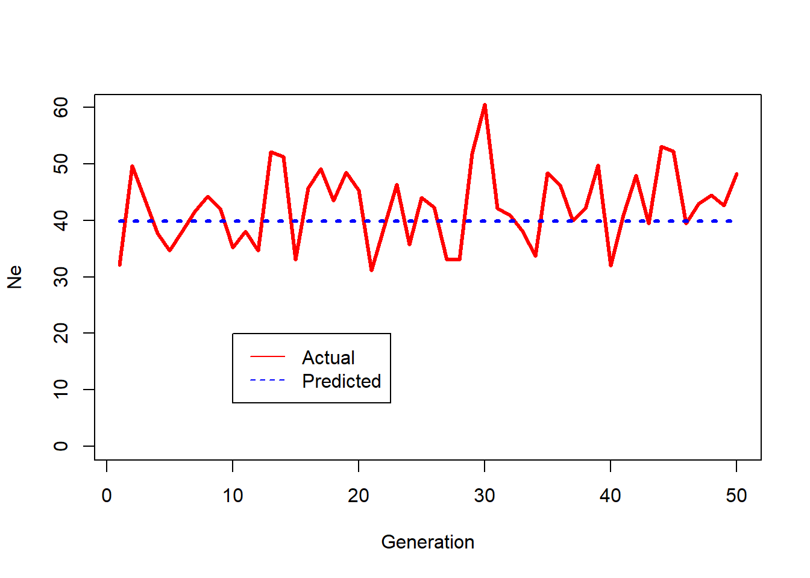
Chunk 7
Adds genetics. Loci are diallelic SNPs and genotypes are coded as 0/1/2 depicting the number of focal alleles. The “reproduce” function vectorizes operations to speed things up compared to “for” loops. Initialize a NxNLoci matrix with 1s so initially all hets. One generation of reproduction generates H-W genotypes in offspring. Computing allele frequencies is simple as colMeans/2.
### Chunk 7 @@@@@@@@ Now we track genetics
## This function vectorizes reproduction to speed things up
reproduce <- function(Genos,BigParents){
noffspring = dim(BigParents)[[2]]
Dads = BigParents[1,]
Moms = BigParents[2,]
L = dim(Genos)[[2]] ### number of loci
# construct matrices of the parental genotypes
parents_geno1 = Genos[Dads, ]
parents_geno2 = Genos[Moms, ]
# offspring are a combination of the two parents
offspring <- rbinom(n=length(parents_geno1), size = 1, p = parents_geno1 / 2) +
rbinom(n = length(parents_geno2), size = 1, p = parents_geno2 / 2)
# convert offspring vector back to a matrix
offspring <- matrix(data = offspring, nrow =noffspring, ncol = L )
return(offspring) } # end function
NLoci = 100
Ne = 200
NOffspring = Ne
Males = 1:(Ne/2)
Females = (Ne/2 + 1):Ne
MaleParents <- sample(Males, NOffspring, replace = TRUE)
FemaleParents <- sample(Females, NOffspring, replace = TRUE)
BothParents = rbind(MaleParents,FemaleParents)
### We use 0/1/2 genotype coding
###Initialize as 100% hets, so P = 0.5 at every locus
Geno1 = matrix(1,Ne,NLoci)
Geno2 = reproduce(Geno1,BothParents)
Geno2[1:5,1:10] ## rows are individuals; columns are loci [,1] [,2] [,3] [,4] [,5] [,6] [,7] [,8] [,9] [,10]
[1,] 2 2 2 0 0 1 0 2 0 2
[2,] 0 2 1 2 1 1 1 0 1 0
[3,] 0 0 1 1 2 2 1 1 1 0
[4,] 1 2 1 1 2 1 2 1 1 1
[5,] 2 0 2 1 1 1 2 0 1 2colMeans(Geno2[,1:10])/2 ## simple way to compute allele frequencies [1] 0.4850 0.5275 0.4825 0.5100 0.4925 0.5050 0.5300 0.5175 0.4450 0.4825Chunk 8
Runs a simulation for 100 generations with Ne = 200.
### Chunk 8 @@@@@@@@ Now run a simulation
NGens = 100
Geno1 = matrix(1,Ne,NLoci)
Freqs = matrix(NA,NGens,NLoci)
Hets = rep(NA,NGens)
ActualNe = rep(NA,NGens)
for (k in 1:NGens) {
MaleParents <- sample(Males, NOffspring, replace = TRUE)
FemaleParents <- sample(Females, NOffspring, replace = TRUE)
BothParents = rbind(MaleParents,FemaleParents)
a = table(BothParents)
b = as.vector(a)
sumk = sum(b)
sumk2 = sum(b^2)
ActualNe[k] = (sumk-2)/(sumk2/sumk-1)
#Produce the generation 1 offspring and calculate genetic indices:
Geno2 = reproduce(Geno1,BothParents)
Freqs[k,] = colMeans(Geno2)/2
Hets[k] = table(Geno2)[2]/(nrow(Geno2)*ncol(Geno2))
# Finally, offspring become parents of the next generation
Geno1 = Geno2
} # end for k
HmeanNe = 1/mean(1/ActualNe)
HmeanNe[1] 198.6771Chunk 9
Plots changes in allele frequency over time at all loci.
### Chunk 9 @@@@@@@@
## To visualize genetic drift, plot frequency of each SNP over time
Generations = 1:NGens
x <- matrix(Generations,length(Generations),100)
y <- Freqs
par(mar=c(0.5,2,0.5,2))
matplot(x,y,type="l",xlab="Generation",ylab="Frequency")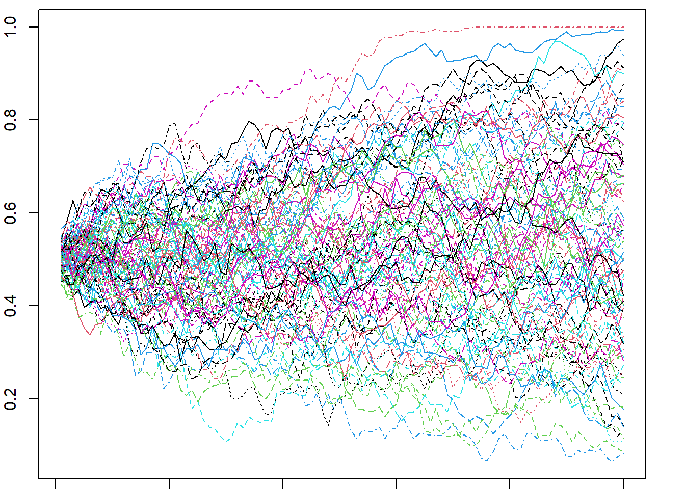
Chunk 10
Plots decline in heterozygosity over time compared to the theoretical expectation.
### Chunk 10 @@@@@@@@
## track loss of heterozygosity
## Expected H at each generation
ExpH = 1:NGens
for (t in 1:NGens) {
ExpH[t] = 0.5*(1 - 1/(2*Ne))^t
}
bottom = min(Hets)*0.99
### plot actual loss of heterozygosity (red triangles) and predicted loss (dashed blue line) over time
plot(1:NGens,Hets,type="p",lwd=3,col="red",xlab="Generation",ylim = c(bottom,0.505),ylab="Heterozygosity")
lines(1:NGens,ExpH,type="l",lty=3,lwd=3,col="blue")
legend(0,0.46, legend=c("Actual", "Predicted"),col=c("red", "blue"), lty=3, cex=1)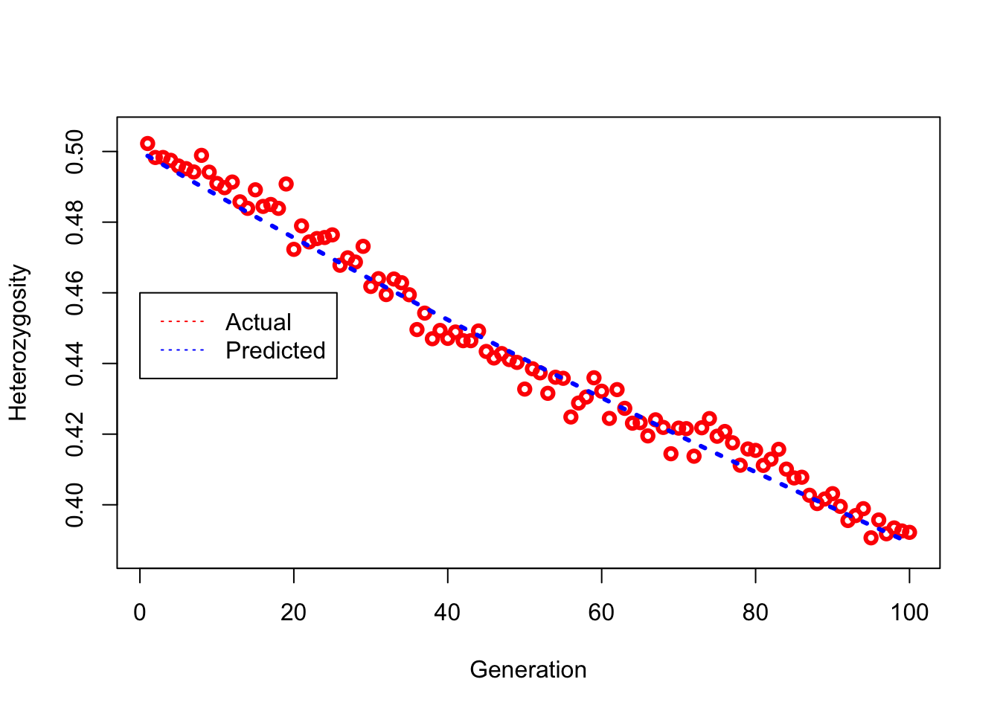
Chunk 11
Introduces a function to compute mean r^2 from the genetic data. This function assumes no missing genotypes (easy with simulated data).
### Chunk 11 @@@@@@@@ Now estimate Ne using the LD method, in presence of a bottleneck
## This functions calculates mean r^2
GetLD <- function(Geno) {
mat = data.matrix(Geno)
mat = t(mat)
mat = mat - rowMeans(mat);
mat = mat / sqrt(rowSums(mat^2));
r = tcrossprod(mat);
rsq = r^2
TotL = dim(Geno)[[2]]
for (i in 1:TotL) {
for (j in i:TotL) { rsq[j,i] = NA}} # use only the part of the matrix above diagonal
return(mean(rsq,na.rm=TRUE)) } # end function Chunk 12
Defines parameters for a simulation to estimate Ne using the LD method.
### Chunk 12 @@@@@@@@ Set up a simulation
Ne1 = 500 ## Initial Ne, before the bottleneck
Males1 = 1:(Ne1/2)
Females1 = (Ne1/2 + 1):Ne1
Ne2 = 100 ## Ne after size change
Males2 = 1:(Ne2/2)
Females2 = (Ne2/2 + 1):Ne2
NLoci = 200 ## assumed to be diallelic (SNP) loci
Sampsize = 60 ## number of individuals sampled to estimate Ne
NGens1 = 10 ## number of generations for burn-in
NGens2 = 40 ## for data collection before size change
NGens3 = 20 ## for data collection after bottleneck
##Some necessary bookkeeping:
TotGens = NGens2+NGens3 ## total time for which data are collected
ActualNe = rep(NA,TotGens)
BottleHets = rep(NA,TotGens)
EstNe = ActualNe
NOff1 = matrix(0,Ne1,NGens2)
NOff2 = matrix(0,Ne2,NGens3)
Geno1 = matrix(1,Ne1,NLoci)
Freqs = matrix(NA,NGens1,100)Chunk 13
Runs the simulation for a single replicate. An initial burnin is run for 10 generations to allow an equilibrium level of LD to accumulate. Then data are collected for a number of generations at a large Ne before a bottleneck reduces Ne. A table shows harmonic means of realized (based on population demography) and estimated (LD method) Ne before and after the bottleneck. The code to estimate Ne uses a slightly simplified version of the code used in LDNe.
### Chunk 13 @@@@@@@@ Run the simulation
##Burnin with NGens1 generations of random mating and genetic drift to equilibrate LD
for (k1 in 1:NGens1) {
## randomly choose two parents for each offspring
MaleParents <- sample(Males1, Ne1, replace = TRUE)
FemaleParents <- sample(Females1, Ne1, replace = TRUE)
BothParents = rbind(MaleParents,FemaleParents)
## create Ne1 offspring, each with genotypes for NLoci loci
Geno2 = reproduce(Geno1,BothParents)
## Get allele frequencies at first 100 loci in offspring
Freqs[k1,] = colMeans(Geno2[,1:100])/2
## offpsring become parents of next generation
Geno1 = Geno2
} # end for k1 -- end of burnin
BurninHets = table(Geno2)[2]/(nrow(Geno2)*ncol(Geno2))
for (k2 in 1:NGens2) { ## before the bottleneck
## randomly choose two parents for each offspring
MaleParents <- sample(Males1, Ne1, replace = TRUE)
FemaleParents <- sample(Females1, Ne1, replace = TRUE)
BothParents = rbind(MaleParents,FemaleParents)
#Get vector of offspring per parent and calculate realized Ne
a = table(BothParents)
b = as.vector(a)
sumk = sum(b)
sumk2 = sum(b^2)
ActualNe[k2] = (sumk-1)/(sumk2/sumk-1)
NOff1[1:length(b),k2] = b
## create Ne1 offspring, each with genotypes for NLoci loci
Geno2 = reproduce(Geno1,BothParents)
BottleHets[k2] = table(Geno2)[2]/(nrow(Geno2)*ncol(Geno2))
GenoS = Geno2[sample(nrow(Geno2),Sampsize),] ## random sample of offspring
##eliminate loci with 2 or fewer minor alleles to minimze bias from rare alleles
cut = 1/Sampsize
P = colMeans(GenoS)/2
GenoS1 = GenoS[, P > cut & P < (1-cut), drop = F] ## excludes loci with singleton alleles
BigRsq = GetLD(GenoS1) ## get mean rsq for sample and estimate Ne using LD method
rprime = BigRsq - 1/(Sampsize-1)
if(Sampsize < 30) { E = (0.308 + sqrt(0.308^2-2.08*rprime))/(2*rprime)} else
{ E = (1/3 + sqrt(1/9-2.76*rprime))/(2*rprime) }
if(E < 0) {E = 9999 }
EstNe[k2] = E
## offpsring become parents of next generation
Geno1 = Geno2
} # end for k2
Geno1 = Geno1[1:Ne2,] ### create the bottleneck
for (k3 in 1:NGens3) {
MaleParents <- sample(Males2, Ne2, replace = TRUE)
FemaleParents <- sample(Females2, Ne2, replace = TRUE)
BothParents = rbind(MaleParents,FemaleParents)
a = table(BothParents)
b = as.vector(a)
sumk = sum(b)
sumk2 = sum(b^2)
ActualNe[NGens2+k3] = (sumk-1)/(sumk2/sumk-1)
NOff2[1:length(b),k3] = b
Geno2 = reproduce(Geno1,BothParents)
BottleHets[NGens2 + k3] = table(Geno2)[2]/(nrow(Geno2)*ncol(Geno2))
GenoS = Geno2[sample(nrow(Geno2),Sampsize),]
cut = 1/Sampsize
P = colMeans(GenoS)/2
GenoS1 = GenoS[, P > cut & P < (1-cut), drop = F]
BigRsq = GetLD(GenoS1)
rprime = BigRsq - 1/(Sampsize-1)
if(Sampsize < 30) { E = (0.308 + sqrt(0.308^2-2.08*rprime))/(2*rprime)} else
{ E = (1/3 + sqrt(1/9-2.76*rprime))/(2*rprime) }
if(E < 0) {E = 9999 }
EstNe[NGens2+k3] = E
Geno1 = Geno2
} # end for k3
## Expected H at each generation
ExpBottleH = 1:TotGens
for (t in 1:NGens2) {
ExpBottleH[t] = BurninHets*(1 - 1/(2*Ne1))^t
}
for (t in 1:NGens3) {
ExpBottleH[t+NGens2] = ExpBottleH[NGens2]*(1 - 1/(2*Ne2))^t
}
##Compute some more results
OutPut=cbind(round(ActualNe,digits=1),round(EstNe,digits=1))
colnames(OutPut) = c("Actual","Estimated")
rownames(OutPut) = 1:TotGens
##OutPut = actual and estimated Ne each generation
HMTrueNe1 = round(NGens2/sum(1/ActualNe[1:NGens2]),digits=1) ## harmonic mean demographic Ne, before change
HMTrueNe2 = round(NGens3/sum(1/ActualNe[(NGens2+1):TotGens]),digits=1) ## harmonic mean demographic Ne, after change
HMEstNe1 = round(NGens2/sum(1/EstNe[1:NGens2]),digits=1) ## harmonic mean estimated Ne, before change
HMEstNe2 = round(NGens3/sum(1/EstNe[(NGens2+1):TotGens]),digits=1) ## harmonic mean estimated Ne, after change
B = matrix( c(HMTrueNe1,HMEstNe1,HMTrueNe2,HMEstNe2),nrow=2, ncol=2)
colnames(B) = c("Before","After")
rownames(B) = c("Actual","Estimated")
B Before After
Actual 503.0 99.1
Estimated 561.6 109.2Chunk 14
Plots expected and actual rate of loss of heterozygosity before and after the bottleneck.
### Chunk 14 @@@@@@@@ compare actual and predicted loss of H over time
bottom = min(BottleHets)*0.99
plot(1:TotGens,BottleHets,type="p",lwd=3,col="red",xlab="Generation",ylim = c(bottom,0.505),ylab="Heterozygosity")
lines(1:TotGens,ExpBottleH,type="l",lty=3,lwd=3,col="blue")
legend(0,0.46, legend=c("Actual", "Predicted"),col=c("red", "blue"), lty=3, cex=1)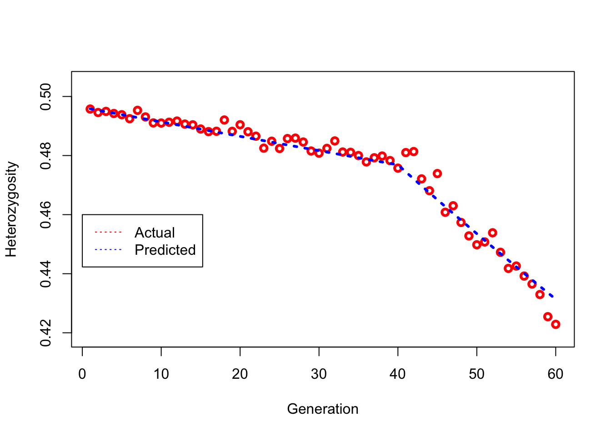
Chunk 15
Plots estimated Ne compared to realized (demographic) Ne before and after the bottleneck.
### Chunk 15 @@@@@@@@### check how LDNe tracks change in Ne
plot(1:TotGens,ActualNe,type="l",lwd=3,col="red",xlab="Generation",ylim = c(0,3*Ne1),ylab="Ne",xlim = c(0,TotGens*1.1))
lines(1:TotGens,EstNe,type="l",lty=3,lwd=3,col="blue")
legend((NGens2*1.1) ,1.7*Ne1, legend=c("Actual", "Estimated"),
col=c("red", "blue"), lty=1:2, cex=.75)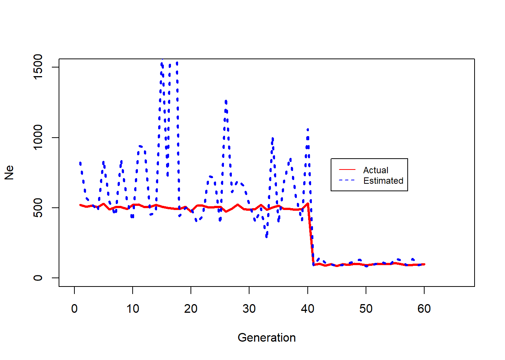
Further Reading
- Franklin, I. R. (1980). Evolutionary change in small populations. In: Soule, M. E. & Wilcox, B. A. (eds) Conservation Biology: An Evolutionary-Ecological Perspective. Sinauer, Sunderland.
- Waples, R. S. (2006). A bias correction for estimates of effective population size based on linkage disequilibrium at unlinked gene loci. Conservation Genetics 7: 167–184.
- Waples, R. K. et al. (2016). Estimating contemporary effective population size in non-model species using linkage disequilibrium across thousands of loci. Heredity 117: 233–240.
- Waples, R. S. & Waples, R. K. (2011). Inbreeding effective population size and parentage analysis without parents. Molecular Ecology Resources 11 (Suppl. 1): 162–171.
- Lynch, M. et al. (2019). Inference of historical population-size changes with allele-frequency data. G3: Genes, Genomes, Genetics 9: 2501–2512. [EPOS]
- Liu, X. & Fu, Y.-X. (2020). Stairway Plot 2: demographic history inference with folded SNP frequency spectra. Genome Biology 21: 280. [Stairways2]
- Frankham, R. (1995). Effective population size/adult population size ratios in wildlife: a review. Genetics Research 66: 95–107.
- Hoban, S. et al. (2022). Global genetic diversity status and trends: towards a suite of essential biodiversity variables (EBVs) for genetic composition. Biological Reviews 97: 1511–1538.